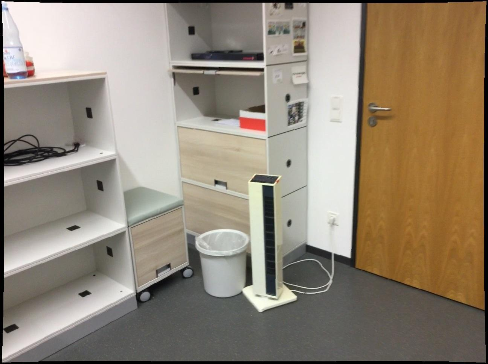
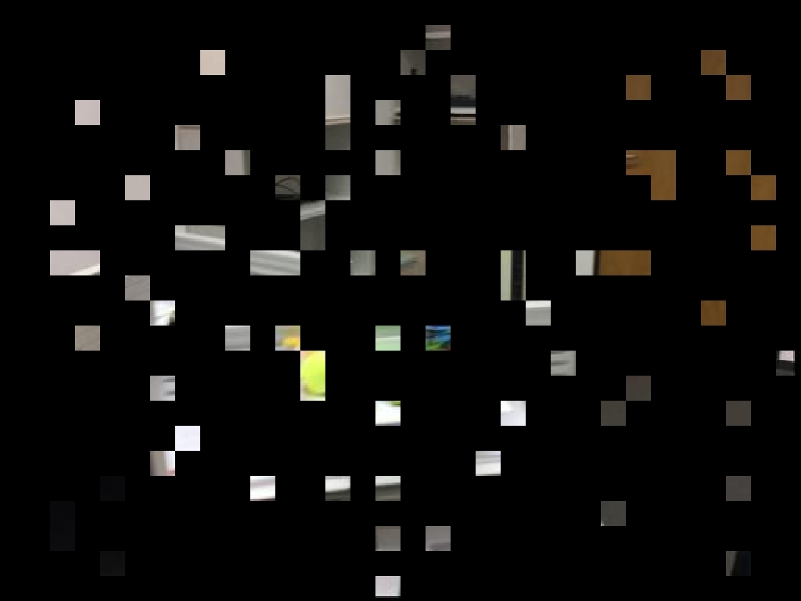
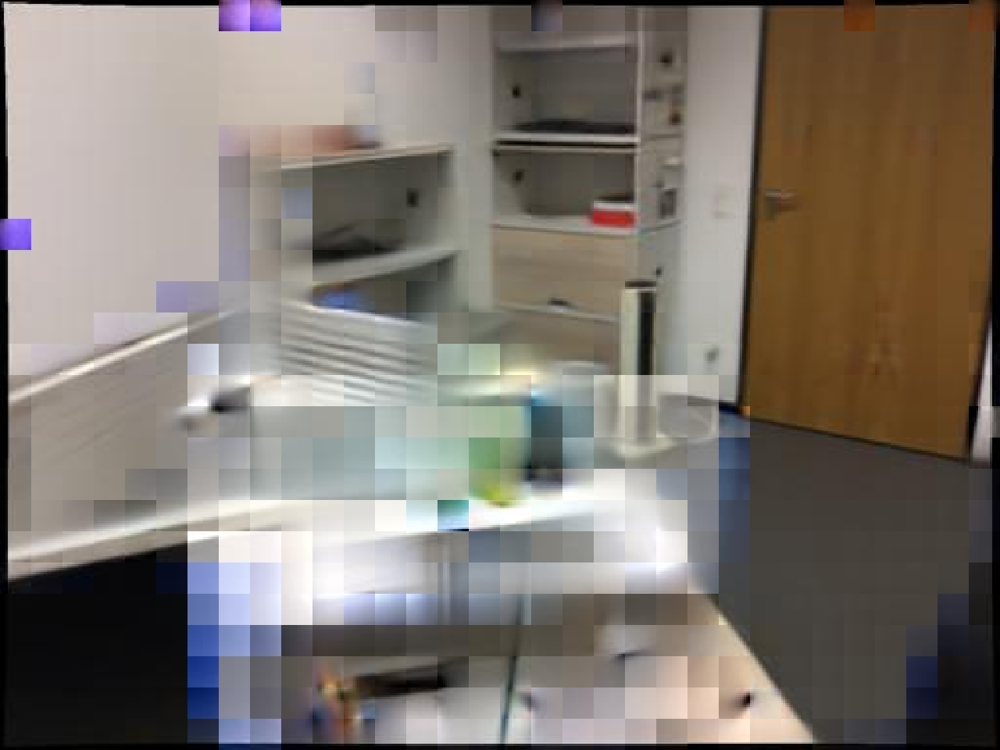
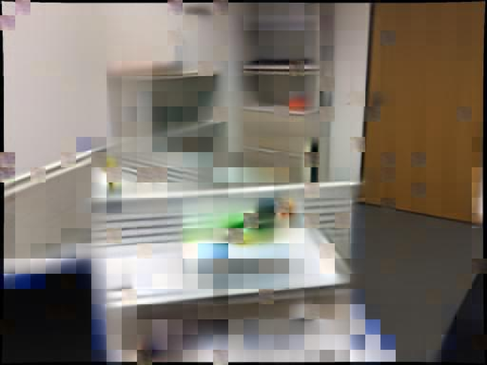
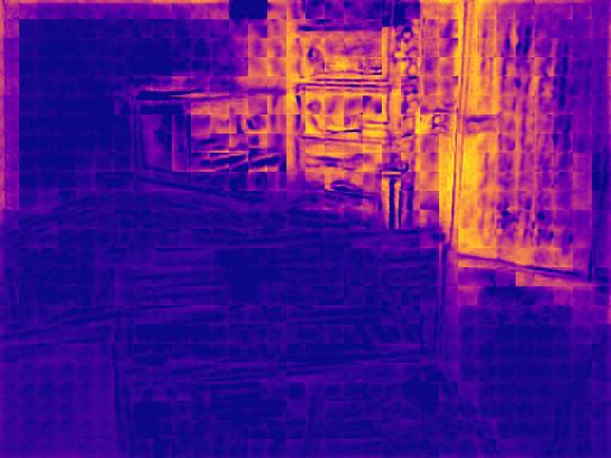
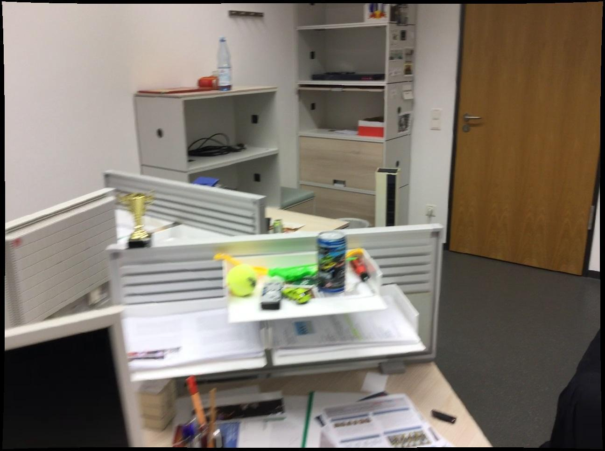

Abstract
Self-supervised pre-training via cross-view completion learns strong features for 3D vision from co-visible regions of image pairs. However, the reference view provides little information for reconstructing non-co-visible patches, implicitly yielding a monocular training signal in these regions. We introduce Gekko, which turns this limitation into a useful signal. The relative improvement of the cross-view reconstruction error over a masked-autoencoder error is a self-supervised proxy for co-visibility: large improvements indicate co-visible regions, negligible ones non-co-visible areas. Gekko is a network, trained from scratch, that jointly performs cross-view completion, masked autoencoding, and per-pixel prediction of this relative improvement, providing an additional binocular signal for all masked regions without any ground-truth 3D annotation. Under identical architectures and training data, Gekko consistently outperforms CroCo on zero-shot correspondence estimation, relative pose estimation, and pointmap regression, with up to 6× higher accuracy at the strictest relative-pose threshold and a 22% drop in end-point error on ETH3D. The extra channel it learns is itself a strong co-visibility detector on unseen scenes, and Gekko’s frozen features outperform released cross-view backbones of comparable or larger size. It can also be trained directly from raw videos with a simple stride-based curriculum, removing the cumbersome 3D preprocessing prior methods require while matching models trained on curated data. Code and pre-trained models are publicly available.
At a Glance
Method
Cross-view completion masks a target view and asks the network to reconstruct it using a second, unmasked reference view. Where the views overlap, the reference carries the answer and the objective is genuinely binocular. Where they do not, the decoder falls back on the monocular context left inside the target itself, and the objective quietly degenerates into masked autoencoding, exactly where a binocular signal would be most valuable.
Gekko turns this failure mode into a measurement. The same masked target is reconstructed twice by the same network: once attending to the reference view (cross-view completion, per-pixel error ℓCroCo), and once with the reference removed (masked autoencoding, error ℓMAE). Their relative improvement, C = (ℓMAE − ℓCroCo) / ℓMAE, measures how much the second view actually helped at that pixel, and so acts as an annotation-free proxy for co-visibility. A third output channel is trained to predict it, which turns every masked pixel, co-visible or not, into binocular supervision.






The Gekko signal on one ScanNet pair. The predicted map fires on the shelves, the cabinet and the door, all of which also appear in the reference view, and stays dark on the foreground desk and floor, which fall outside it. No depth, pose or co-visibility annotation is used anywhere.
Written as a loss, with sg[·] the stop-gradient operator so that only Ĉ is optimised by this term:
This is exactly ℓMAE2(C − Ĉ)2: an error on the ratio, weighted by the MAE error itself. It down-weights pixels where ℓMAE is small, which is where the ratio is unreliable: a uniform wall that monocular context already reconstructs perfectly leaves no room for the reference view to improve on it, whether or not it is co-visible. The full objective sums the cross-view completion loss, the masked-autoencoding loss and ℓRI, optimised jointly from scratch in a single network.
Explore the training step
Everything below is read off the two forward passes of the pretrained model on four ScanNet pairs. The co-visibility labels come from ground-truth depth and camera poses; they only verify the signal and play no part in producing it.
Where the reference view sees nothing, the median ratio ℓMAE ÷ ℓCroCo is 1.00 on every pair: the two passes are indistinguishable, which is the degeneracy Gekko is built around. The predicted Ĉ also separates co-visible from non-co-visible patches more reliably than the raw C it is trained on, since averaging over the noise of a single 90% masked draw turns a crude per-pixel measurement into a clean estimate.
Results
Relative pose on ScanNet-1500. Percentage of pairs whose predicted pose falls within 10° of rotation error and the given translation threshold (higher is better).
| Model | 0.25m | 0.5m | 1m |
|---|---|---|---|
| Base, ScanNet-50 | |||
| CroCo-B | 5.5 | 12.9 | 18.5 |
| Gekko-B | 29.1 | 43.3 | 47.5 |
| Base, ScanNet-all | |||
| CroCo-B | 6.6 | 15.7 | 23.0 |
| Gekko-B | 43.7 | 54.4 | 57.6 |
| Large, ScanNet-all | |||
| CroCo-L | 7.5 | 16.1 | 23.0 |
| Gekko-L | 35.9 | 50.6 | 56.3 |
All rows are trained from scratch by us at matched architecture, data, global batch size and step count.
Co-visibility from the predicted channel Ĉ. How well each score separates co-visible from non-co-visible pixels, evaluated against ground-truth co-visibility (higher is better).
| Score | ScanNet-1500 | 7-Scenes | ||
|---|---|---|---|---|
| AP | ROC-AUC | AP | ROC-AUC | |
| ℓCroCo (CroCo-B) | 0.576 | 0.577 | 0.799 | 0.603 |
| Ĉ (Gekko-B) | 0.763 | 0.737 | 0.859 | 0.702 |
Chance AP is 0.502 on ScanNet-1500 and 0.726 on 7-Scenes. Ĉ also beats the pseudo-label it was trained on (0.555 AP): learning to predict the relative improvement denoises it rather than merely imitating it.
Frozen Large backbones. Same probing protocol for every backbone, on relative pose, pointmap regression and optical flow.
| Model | Pose ↑ | Pointmap Chamfer ↓ | Flow ↓ | ||
|---|---|---|---|---|---|
| ScanNet-1500 @0.25m | ScanNet | ETH3D | DL3DV | Sintel AEPE clean | |
| Self-supervised pre-training | |||||
| Gekko-L (ours) | 33.2 | 0.077 | 0.317 | 1.122 | 6.17 |
| CroCo v2-L | 19.7 | 0.109 | 0.394 | 1.359 | 13.08 |
| MuM-L | 19.9 | 0.106 | 0.377 | 1.321 | 22.44 |
| Fully supervised reference | |||||
| VGGT | 92.3 | 0.030 | 0.240 | 1.065 | n/a |
VGGT is a fully supervised ~1B-parameter reference rather than a baseline: it is trained with 3D supervision, it is far larger than the backbones above, and its training corpus contains ScanNet and DL3DV.
Beyond ScanNet
The results above use benchmarks close to the pre-training corpus. Both read-outs below are taken on pairs from 7-Scenes, Cambridge Landmarks and ETH3D, datasets that appear nowhere in the 12-source mix. Nothing is adapted between them: the models are frozen and simply run on the pair. The second card keeps one ScanNet pair at the end as an in-mix control.
Use the Model
The pre-trained ViT-L is on the HuggingFace Hub.
Torch Hub needs no checkout and pulls only torch, einops, huggingface_hub and safetensors, none of the training stack.
Load the pre-trained backbone
import torch
model = torch.hub.load("thibautloiseau/gekko", "from_pretrained").eval()
The code repository has the co-visibility channel, the downstream heads (pose, pointmap, depth, segmentation, flow) and the full training recipe.
Citation
@article{loiseau2026gekko,
title={Revisiting Cross-View Completion: Self-Supervised Pre-Training via Reconstruction Error Comparison},
author={Loiseau, Thibaut and Bourmaud, Guillaume and Lepetit, Vincent},
journal={arXiv preprint arXiv:2609.01530},
year={2026}
}
Acknowledgments
This project has received funding from the Bosch Research Foundation (Bosch Forschungsstiftung), the European Union (ERC Advanced Grant Explorer, Funding ID #101097259), and was granted access to the HPC resources of IDRIS under the allocation 2026-AD010617525R1 made by GENCI.